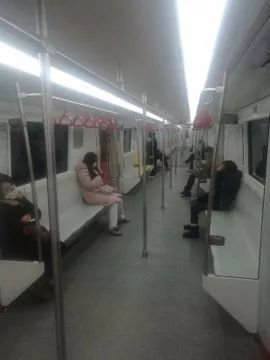
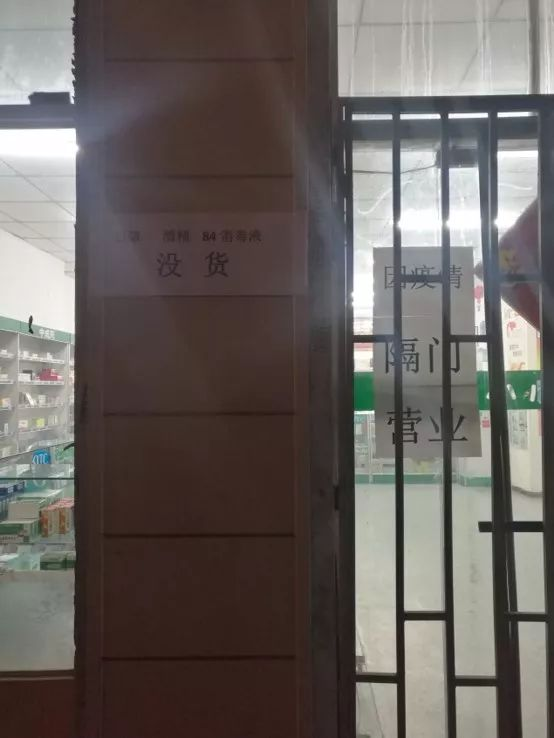

我在监控里，看着武汉城里的爸爸和奶奶
原文链接 备份链接 翁文的爸爸和奶奶，在武汉相继患上了新冠肺炎。在北京工作的翁文，每天只能通过监控，关注着他们的一举一动。几经折腾，爸爸终于入院，83岁的奶奶却依旧孤立无援。 文 | 吴美芬 翁文是一名在北京工作的武汉人，他远在武汉的爸 …
作者：刘倩
来源：*商业人物*（ID：*biz-leaders）*
截至2月4日6时，天津已有新型冠状病毒肺炎确诊病例66例，在动车客车段乘务车间和宝坻区百货大楼都出现了聚集性发病，企业复工和学校开学时间一再延期，至今未定。
在这个漫长又难熬的假期里，人以单元为单位进行隔离，被困在方寸之间，过了一个非典型春节。
壹
滨江道“空了”。
这条全长2094米的街道平均每日接纳30万人次，节假日及高峰时段日客流量可达百万，是天津最繁华的商业街。每年春节假期，我总有几天消磨在此，看电影、逛商场、和朋友聚会。
如今，它变成了一条“空街”，行人一只手就能数得过来，两侧的商场大门紧闭——大半已经停业，坚持营业的商场在门口配备了红外线测温仪，不发烧、戴口罩者才可入内。内里也是冷冷清清，营业员全部佩戴口罩，谈论的大多是跟肺炎有关的话题——今天又确诊了两例，听说有种药管用……不必再费劲心思地揽客，在我停留的二十分钟里，只有一行三位客人在挑选金饰，原因是“金能辟邪”。
 （受访者樊振供图）
（受访者樊振供图）
据某商场工作人员透露，今年春节期间的日均营业额只有2-3万元，是往年同期的二十分之一。滨江商厦于正月初二下发停业通知，是这个老牌商场自1996年以来的首次停业，2003年“非典”时期，也仅是每日停业半天。
正月初二，在天津被称为“姑爷节”，往年的这一天，路面上一车难求，都是带着孩子、拎着点心去老丈人家拜年的姑爷们。今年的初二笼罩在一片大雾中，路面上罕有行人，公交车上也不过寥寥数人，多半都在空驶。一大早，我妈就在和二姨打电话，继续探讨从出现疫情后就悬而未决的问题——还要不要去大姨家？饭店不肯退订金怎么办？为免浪费还是去吧？
那是天津自1月21日公布首例确诊病例后的第五天，累计确诊病例已达13例，并出现了聚集性发病，政府已于1月24日零时启动重大突发公共卫生事件一级响应。但在我妈看来，疫情还没有严重到出不了门的地步，自家亲戚知根知底，在家里聚一聚，又不接触外人，出门也戴着口罩，能被谁传染？
年前他们频繁出入各大超市、菜市场，兢兢业业地践行着“二十五，扫房土；二十六，炖大肉；二十七，宰公鸡；二十八，白面发；二十九，贴倒有”的传统，戴着口罩已经是一种巨大的进步了。
好在几乎没有人真的去现宰一只公鸡，1月23日天津市人民政府新闻办公室官方微博“天津发布”称，在三个市场内发现销售现宰活禽，已进行无害化处理。同日，餐饮协会倡导商家和消费者协商解决预订退单问题。
刘军在一家集KTV、洗浴、餐饮于一体的大型酒店工作，他说春节期间他们酒店预订出去了800桌，备了40万元的冻品和4、5万元的蔬菜，还有200个西瓜，塞满了4间大小为40平方米的冷库。年初二开始酒店自发停业，顾客可无条件退桌或改期，囤积的大量易坏蔬菜被拉到市场低价甩卖。
菜装满了一辆大依维柯车，还没有卖完，刘军估计这次损失不少，“我们老板愁得天天在大厅坐着”。这样的饭店不在少数，西贝莜面村全国400家线下门店基本停业，预计春节前后一个月营收额损失高达7-8亿元，老板在接受采访时称，贷款发工资也只能撑三个月了。
贰
初二的聚会取消了，所有的聚会都取消了。天津人过年有个走亲访友的传统，我家尤甚，串门日程能排满整个假期，今年安安静静宅在家里就觉得时间变得格外漫长难熬。
看电视成为最好的打发时间的方式，也是最好的获取本地信息的方式，我惊讶地发现常年不看的天津电视台只一个新闻频道就有12个时段、8档节目在滚动播出最新疫情和应对措施。
天津地铁自1月26日起全线网测温，不戴口罩、不测体温者禁入，坐地铁像是坐专列，一节车厢大约有44个座位，最多时不过坐了十一二人，大家默契地各自占据一排座椅的一角，谨慎地和他人保持距离。

公交线路要求“一圈一通风”、“平均满载率低于70%，给乘客留出安全距离”，一位手里攥着口罩的中年妇女被司机勒令戴上口罩才能上车。
出租车和叫车平台上的私家车都要求每日消毒、司乘双方戴口罩，乘客不戴口罩司机可以拒载，司机不戴口罩乘客可以投诉。但谢师傅也不是每次都严格执行，他戴着普通的棉布口罩，拉过喝醉酒的客人，“不戴也就不戴了，这样的能有嘛毛病？”
滨江道的两头各有一名保安拿着红外线测温仪拦住每一个想穿街而过的行人，体温合格才可进入，时不时还有人巡逻检查。但整条街道仅有两台测温仪，滨江道并不是一个只有两端可以进入的封闭街区，当我问及行人要是从中间的岔路进来怎么办的时候，保安告诉我：“现在到处都在测体温，要是真有问题就到不了这了，跑得了初一跑不了十五”。
戴口罩、测体温被当作一个强制性措施，让人觉得些许安心，但日渐增多的确诊病例也让人觉得恐慌，少出门、少接触成了所有人的共识，于是开始大量囤货。最先被抢购一空的是方便面、挂面等速食品，我家附近的一个小超市，初二那天所有康师傅方便面被抢购一空，另一个大型超市则是所有袋装方便面售罄，货架上一片狼藉，理货员正在补货桶装面，告诉那些犹豫着想等袋装面的人，“这是超市最后的存货了，还不知道什么时候能再进货”。

情况并没有想象般严重，缺货、涨价的混乱最多持续了两天。1月28日大年初四那天，100吨大白菜发运批发市场；第二天，蔬菜进货量增加六成，达到了5500吨；同日，康师傅天津工厂三条生产线开工，保证日产不低于400万袋；自1月31日起，每日发布部分农贸批发市场重点商品价格监测。
春节假期延长、大中小学开学延期，除了偶尔出门采购新鲜蔬菜水果外，大多数人的生活如同静止了一般，但还有些人一直在工作，维持着这座城市的运转。
叁
1月26日，天津市政府紧急通知，要求全市公务员提前结束假期，于27日0时前返岗。
陈聪是一名街道基层公务员，她在25日深夜12点接到通知，26日从河南返津，27日一早正式上班。她的工作是下社区，挨家挨户排查有无武汉、湖北来津人员，并进行宣传监督，督促小区保安设岗，禁止外来人员进入，督促物业进行全面消毒，督促居民戴口罩、勤洗手。
在城市中，社区防控是防止疫情扩散的关键一环。国家卫健委疾控局一级巡视员贺青华在1月27日的新闻发布会上重点谈到了社区防控工作，“疫情防控正处于关键时期，必须充分发挥基层社区包括农村社区的动员能力，实行地毯式追踪网格化管理，将防护措施落实到户、到人，群防群控，稳防稳控”。
社区工作人员也面临着很大的压力，每日超负荷工作，陈聪爬楼爬得脚都肿了，几日下来连说话都没力气，更大的问题是，防护物资的紧缺。陈聪下户时唯一的防护工具就是口罩，还缺货得厉害，政府协调未果，只好让各单位各显神通，她说她也害怕，“但这是工作，害怕也没有办法”。
同样被召回的还有张杨，她是天津人，在某局下属事业单位工作。召回的第一天，没有防疫任务，她做着常规工作，中午11点半接到通知，因物资不够，防护设备无法发放到位，第二天不用来上班了。一个小时后，再次接到通知，联系上口罩了，可以正常上班。
“天津公务人员提前结束假期”这一话题登上了微博热搜榜，底下评论有褒有贬。《侠客岛》发表了一篇文章，题为《公务员提前返岗为防疫？别成了形式主义》，现在已经被删除了。与防疫工作无关的张杨，在1月28日下午再次接到通知，继续放假，直到2月3日上班。
口罩一货难求。天津出现首例确诊病例的那天，我妈在三家药店买到了三包价格不一的普通防护口罩，聊胜于无。第二天，各大药店的口罩开始被疯抢，酒精、84消毒液相继断货。我家附近的三家药店不约而同贴出了无货通知，其中一家在做缺货登记，密密麻麻写满了好几页A4纸，另一家干脆隔门营业。特殊时期，药店工作人员也被推到了“一线”，有人发着烧来买药，王令告诉我，“这种时候顾客说话都是有隐瞒的”，几天后，药店规定，咳嗽发烧患者买药要实名登记。

徐意则直接网购，各大电商平台她都下了单，目前只收到了一单，是在21日23:08分下单，从山东枣庄发货，经顺丰承运，辗转济南、北京，于30日到达天津。她还是担心，其他几单迟迟没有发货，区区一包口罩又能供同为上班族的一家三口使用多久呢。
人人都恨不得多抢点口罩，给自己多点防护的时候，拾荒人似乎被遗忘了。我在滨江道停留的不到一个小时时间里，行人没见到几个，拾荒人却至少有七位，他们像往常一样，沿街翻找垃圾箱，挑出矿泉水瓶和废报纸，他们中有三人没有戴口罩，还有的人口罩脏兮兮的。
几乎每一个路过滨江道的人都会举起手机，拍下这难得一见的冷清。75岁的退休老大爷樊振，这几天背着单反相机几乎拍遍了天津的地标性建筑，他说：“特殊时期，我要把这些记录下来”。
（文中均为化名）
*头图由受访者樊振提供

推荐阅读


严正声明：“商业人物”所有原创文章，转载均须获授权。一切形式非法转载，包括但不限于盗转、未获“商业人物”授权通过第三方转载行为，均属侵权行为，“商业人物”将公布“黑名单”并追究法律责任。“商业人物”只愿与尊重知识产权的机构合作。
投稿、约访、合作，联系邮箱：bizleaders@qq.com
添加微信biz-leader，获转载授权或邀您加入商友群
1.长按右侧二维码即可关注***。*
2.期待您置顶与星标。欢迎分享与评论，欢迎通过留言或私信方式给我们提供选题线索。
3.点击“阅读原文”，看商业人物官网，获取更多精彩内容。**

原文链接 备份链接 翁文的爸爸和奶奶，在武汉相继患上了新冠肺炎。在北京工作的翁文，每天只能通过监控，关注着他们的一举一动。几经折腾，爸爸终于入院，83岁的奶奶却依旧孤立无援。 文 | 吴美芬 翁文是一名在北京工作的武汉人，他远在武汉的爸 …
原文链接 备份链接 疫情发展 根据丁香医生实时数据，截至 2020 年 2 月 4 日 18 时，全国累计确诊病例 20520 例，疑似病例 23214 例。较昨日，新增确诊病例 3284 例，新增疑似病例 5027 例。其中， …
原文链接 备份链接 武汉春寒料峭，疫情仍在蔓延。但也因为抗击疫情，本不相识的司机和医生之间，达到了前所未有的默契。“谢谢”和“加油”，是他们每次相遇和分开的标记 文 |《财经》特派武汉记者 刘以秦 编辑 | 谢丽容 图1: 在路上的爱心司 …
原文链接 备份链接 封城后的湖北荆州：医用级防护物资存量告急 2020-02-03 19:36 作者：邹黄晶 张玉 来源：中国经营网 特约撰稿 邹黄晶 本报记者 张玉 荆州、上海报道 “我们已经想尽了一切办法，目前最缺的还是医用级口罩、防 …
原文链接 备份链接 记者/梁婷 编辑/石爱华 宋建华 延边地区高速设卡进行防疫检查（图片来自网络） 截至2月3日15时，新型肺炎累计报告确诊17252例，死亡361例，治愈485例，疑似病例21558人。统计数据之外，有诸多密切接触者正在 …